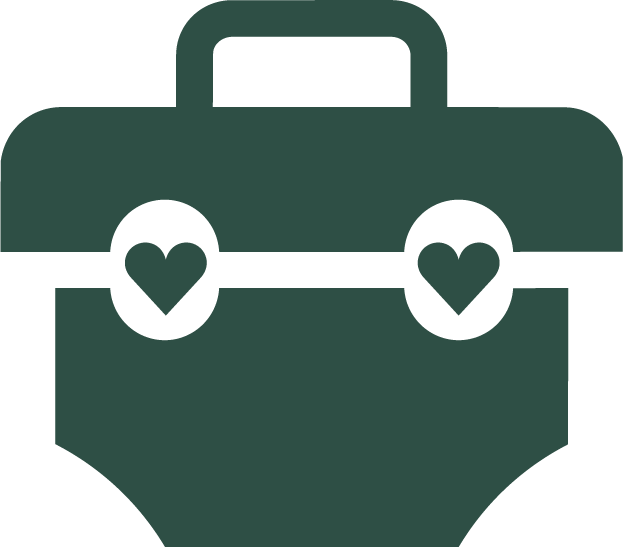
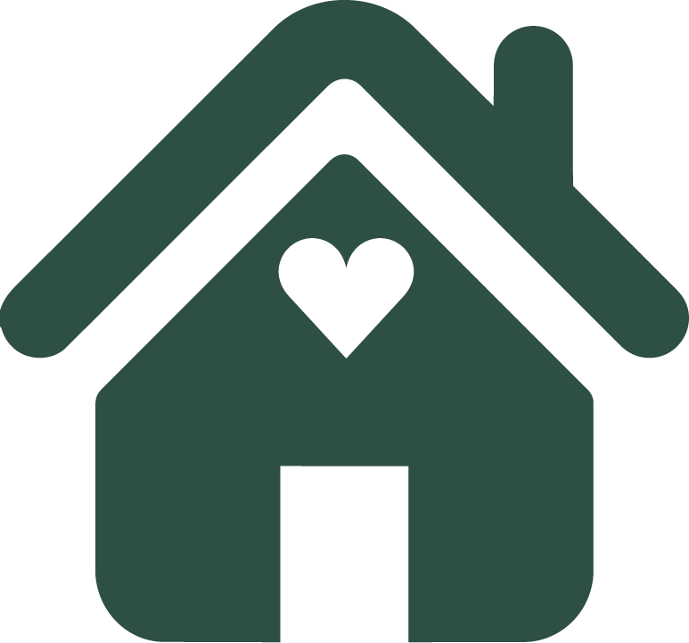

Tener listo tu kit previamente planeado
Fuente: IDIGER y UNGRD.

Tener listo tu kit previamente planeado
Fuente: IDIGER y UNGRD.

Planear un punto de encuentro con el mayor detalle posible, tiempo de espera acordado, comunicación alterna (texto o línea fija) y tareas por persona.
Fuente: IDIGER y UNGRD.

Asegura tu hogar: muebles altos anclados, objetos pesados en lo bajo, vidrios con película de seguridad, nada de cuadros sobre las camas y rutas de evacuación despejadas.
Fuente: IDIGER

Verifica las áreas seguras: en construcción sismorresistente, junto a columnas o bajo muebles macizos; en construcción no sismorresistente, bajo muebles macizos (sofás grandes, camas macizas, comedores o escritorios fuertes).
Fuente: UNGRD
Asegúrate de que el lugar de encuentro sea abierto y despejado, lejos de edificios altos, postes y árboles altos, y no sobre vías públicas ni accesos de edificios.
Fuente: IDIGER y UNGRD.